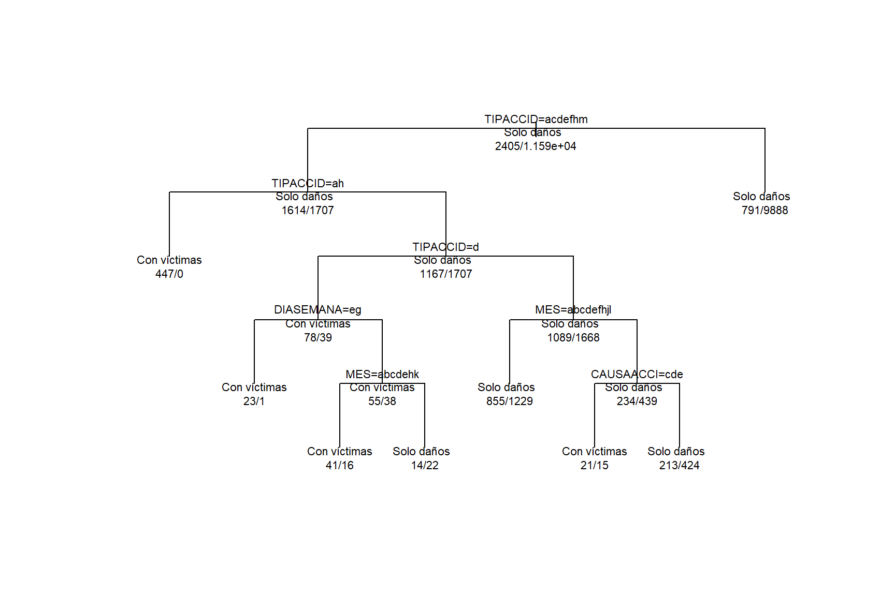

Código
p_solo_danos <- 0.7
p_con_victimas <- 0.3
gini <- 1 - (p_solo_danos^2 + p_con_victimas^2)
gini[1] 0.42Al finalizar este capítulo, el lector será capaz de:
Un árbol de decisión es un modelo de aprendizaje supervisado que clasifica observaciones mediante una secuencia de preguntas.
En lugar de usar una sola ecuación, como en la regresión logística, un árbol va dividiendo los datos en grupos cada vez más homogéneos. Cada división se basa en una variable predictora.
En este capítulo seguiremos con la misma pregunta práctica:
¿Podemos clasificar si un accidente de tránsito tendrá víctimas o será solo de daños materiales?
La variable respuesta será nuevamente accidente_con_victimas.
Un árbol de decisión funciona como una serie de preguntas del tipo:
¿El accidente fue colisión con peatón?
Sí -> mayor probabilidad de víctimas
No -> hacer otra pregunta
¿La causa presunta fue conductor?
Sí -> hacer otra pregunta
No -> clasificar según el grupo observadoCada pregunta divide los datos en subconjuntos. El objetivo es que, al final del proceso, las hojas del árbol contengan observaciones lo más parecidas posible entre sí.
Los principales elementos son:
| Elemento | Descripción |
|---|---|
| Nodo raíz | Primera división del árbol |
| Nodo interno | Pregunta intermedia usada para seguir dividiendo |
| Rama | Camino que se sigue dependiendo de la respuesta |
| Hoja terminal | Resultado final de clasificación |
| Profundidad | Número de niveles del árbol |
En clasificación, un árbol busca dividir los datos para formar grupos cada vez más puros.
Una medida común de impureza es el índice de Gini:
\[ Gini(t) = 1 - \sum_{k=1}^{K} p_{k}^{2} \]
Donde:
Si un nodo contiene observaciones muy mezcladas, su impureza es alta. Si casi todas las observaciones pertenecen a una sola clase, su impureza es baja.
Supongamos un nodo con 10 accidentes:
Entonces:
\[ p_{solo\ daños} = 0.7 \]
\[ p_{con\ víctimas} = 0.3 \]
La impureza de Gini es:
\[ Gini = 1 - (0.7^2 + 0.3^2) = 1 - (0.49 + 0.09) = 0.42 \]
En R:
p_solo_danos <- 0.7
p_con_victimas <- 0.3
gini <- 1 - (p_solo_danos^2 + p_con_victimas^2)
gini[1] 0.42Interpretación del resultado.
El valor 0.42 indica que el nodo todavía tiene mezcla entre clases. Un árbol buscaría una división que reduzca esa impureza.
Algoritmo: Árbol de decisión para clasificación
Entrada:
- Base de datos de entrenamiento
- Variable respuesta
- Variables predictoras
Proceso:
1. Iniciar con todos los datos en el nodo raíz.
2. Evaluar posibles divisiones usando las variables predictoras.
3. Elegir la división que reduzca más la impureza.
4. Repetir el proceso en cada nuevo nodo.
5. Detener el crecimiento del árbol según criterios de control.
6. Clasificar cada hoja según la clase mayoritaria.
Salida:
- Árbol entrenado
- Reglas de decisión
- Predicciones
- Métricas de evaluaciónlibrary(readr)
library(dplyr)
library(ggplot2)
library(rpart)
ruta_atus_ml <- "datos/atus_ml_preparado.csv"
file.exists(ruta_atus_ml)[1] TRUEif (file.exists(ruta_atus_ml)) {
atus_ml <- read_csv(ruta_atus_ml, show_col_types = FALSE)
print("Base preparada cargada correctamente.")
} else {
atus_ml <- NULL
print("No se encontró el archivo datos/atus_ml_preparado.csv. Ejecuta primero el capítulo 2.")
}[1] "Base preparada cargada correctamente."Interpretación del resultado.
Si el archivo existe, se carga la base preparada. Esta base contiene la variable respuesta y las variables predictoras que hemos utilizado en capítulos anteriores.
Para que el capítulo pueda ejecutarse con rapidez en cualquier computadora, usaremos una muestra de la base.
if (!is.null(atus_ml)) {
set.seed(123)
tamano_muestra <- min(20000, nrow(atus_ml))
atus_arbol <- atus_ml |>
sample_n(tamano_muestra)
data.frame(
filas = nrow(atus_arbol),
columnas = ncol(atus_arbol)
)
} filas columnas
1 20000 6Explicación del código.
sample_n() selecciona una muestra aleatoria. Esto hace más ágil el entrenamiento del árbol y evita saturar el PDF.
if (exists("atus_arbol")) {
atus_arbol <- atus_arbol |>
mutate(
accidente_con_victimas = factor(
accidente_con_victimas,
levels = c("Con víctimas", "Solo daños")
),
MES = as.factor(MES),
ID_HORA = as.numeric(ID_HORA),
DIASEMANA = as.factor(DIASEMANA),
TIPACCID = as.factor(TIPACCID),
CAUSAACCI = as.factor(CAUSAACCI)
) |>
na.omit()
round(100 * prop.table(table(atus_arbol$accidente_con_victimas)), 2)
}
Con víctimas Solo daños
17.2 82.8 Interpretación del resultado.
La tabla muestra el porcentaje de accidentes con víctimas y de solo daños dentro de la muestra. Como en los capítulos anteriores, la clase “Solo daños” suele ser mayoritaria.
if (exists("atus_arbol")) {
set.seed(123)
n <- nrow(atus_arbol)
indices_entrenamiento <- sample(1:n, size = round(0.7 * n))
entrenamiento <- atus_arbol[indices_entrenamiento, ]
prueba <- atus_arbol[-indices_entrenamiento, ]
data.frame(
conjunto = c("Entrenamiento", "Prueba"),
registros = c(nrow(entrenamiento), nrow(prueba)),
porcentaje = c(
round(100 * nrow(entrenamiento) / nrow(atus_arbol), 2),
round(100 * nrow(prueba) / nrow(atus_arbol), 2)
)
)
} conjunto registros porcentaje
1 Entrenamiento 14000 70
2 Prueba 6000 30Interpretación del resultado.
El conjunto de entrenamiento se usa para construir el árbol. El conjunto de prueba se reserva para evaluar qué tan bien clasifica datos no usados durante el entrenamiento.
if (exists("entrenamiento")) {
modelo_arbol <- rpart(
accidente_con_victimas ~ MES + ID_HORA + DIASEMANA + TIPACCID + CAUSAACCI,
data = entrenamiento,
method = "class",
control = rpart.control(
cp = 0.001,
minsplit = 50,
maxdepth = 5
)
)
modelo_arbol
}n= 14000
node), split, n, loss, yval, (yprob)
* denotes terminal node
1) root 14000 2405 Solo daños (0.17178571 0.82821429)
2) TIPACCID=Caída de pasajero,Colisión con animal,Colisión con ciclista,Colisión con ferrocarril,Colisión con motocicleta,Colisión con peatón (atropellamiento),Volcadura 3321 1614 Solo daños (0.48599819 0.51400181)
4) TIPACCID=Caída de pasajero,Colisión con peatón (atropellamiento) 447 0 Con víctimas (1.00000000 0.00000000) *
5) TIPACCID=Colisión con animal,Colisión con ciclista,Colisión con ferrocarril,Colisión con motocicleta,Volcadura 2874 1167 Solo daños (0.40605428 0.59394572)
10) TIPACCID=Colisión con ciclista 117 39 Con víctimas (0.66666667 0.33333333)
20) DIASEMANA=Miercoles,Viernes 24 1 Con víctimas (0.95833333 0.04166667) *
21) DIASEMANA=Domingo,Jueves,lunes,Martes,Sabado 93 38 Con víctimas (0.59139785 0.40860215)
42) MES=01,02,03,04,05,08,11 57 16 Con víctimas (0.71929825 0.28070175) *
43) MES=06,07,09,10,12 36 14 Solo daños (0.38888889 0.61111111) *
11) TIPACCID=Colisión con animal,Colisión con ferrocarril,Colisión con motocicleta,Volcadura 2757 1089 Solo daños (0.39499456 0.60500544)
22) MES=01,02,03,04,05,06,08,10,12 2084 855 Solo daños (0.41026871 0.58973129) *
23) MES=07,09,11 673 234 Solo daños (0.34769688 0.65230312)
46) CAUSAACCI=Falla del vehículo,Mala condición del camino,Otra 36 15 Con víctimas (0.58333333 0.41666667) *
47) CAUSAACCI=Conductor,Peatón o pasajero 637 213 Solo daños (0.33437991 0.66562009) *
3) TIPACCID=Certificado cero,Colisión con objeto fijo,Colisión con vehículo automotor,Incendio,Otro,Salida del camino 10679 791 Solo daños (0.07407061 0.92592939) *Explicación del código.
La función rpart() ajusta un árbol de clasificación. El argumento method = "class" indica que la variable respuesta es categórica. Los parámetros de control ayudan a evitar un árbol demasiado grande.
Interpretación del resultado.
El objeto modelo_arbol contiene las reglas aprendidas por el árbol. Cada división intenta separar mejor los accidentes con víctimas de los accidentes de solo daños.
if (exists("modelo_arbol")) {
printcp(modelo_arbol)
}
Classification tree:
rpart(formula = accidente_con_victimas ~ MES + ID_HORA + DIASEMANA +
TIPACCID + CAUSAACCI, data = entrenamiento, method = "class",
control = rpart.control(cp = 0.001, minsplit = 50, maxdepth = 5))
Variables actually used in tree construction:
[1] CAUSAACCI DIASEMANA MES TIPACCID
Root node error: 2405/14000 = 0.17179
n= 14000
CP nsplit rel error xerror xstd
1 0.0929314 0 1.00000 1.00000 0.018557
2 0.0162162 2 0.81414 0.81538 0.017075
3 0.0016632 3 0.79792 0.79709 0.016913
4 0.0012474 5 0.79459 0.80915 0.017020
5 0.0010000 7 0.79210 0.80748 0.017005Explicación del código.
printcp() muestra una tabla de complejidad. Esta tabla ayuda a identificar si el árbol puede simplificarse mediante poda.
Interpretación del resultado.
Un árbol muy grande puede memorizar patrones del conjunto de entrenamiento y generalizar mal. La tabla de complejidad permite observar el equilibrio entre tamaño del árbol y error estimado.
if (exists("modelo_arbol")) {
plot(modelo_arbol, uniform = TRUE, margin = 0.1)
text(modelo_arbol, use.n = TRUE, all = TRUE, cex = 0.7)
}
Interpretación del resultado.
La figura muestra las reglas principales del árbol. En cada nodo se observa una condición de decisión y en las hojas aparece la clase final asignada.
if (exists("modelo_arbol")) {
importancia <- modelo_arbol$variable.importance
if (!is.null(importancia)) {
importancia_variables <- data.frame(
variable = names(importancia),
importancia = as.numeric(importancia)
) |>
arrange(desc(importancia))
importancia_variables
}
} variable importancia
1 TIPACCID 1149.1885629
2 CAUSAACCI 47.5833732
3 MES 8.8010721
4 DIASEMANA 5.1370968
5 ID_HORA 0.2676434if (exists("importancia_variables")) {
ggplot(importancia_variables, aes(x = reorder(variable, importancia), y = importancia)) +
geom_col() +
coord_flip() +
labs(
title = "Importancia de variables en el árbol de decisión",
x = "Variable",
y = "Importancia"
)
}
Interpretación del resultado.
Las variables con mayor importancia son las que más ayudaron al árbol a separar las clases. Esta información facilita explicar el modelo a estudiantes, tomadores de decisiones o usuarios no técnicos.
if (exists("modelo_arbol") && exists("prueba")) {
pred_arbol_clase <- predict(
modelo_arbol,
newdata = prueba,
type = "class"
)
head(data.frame(
real = prueba$accidente_con_victimas,
predicho = pred_arbol_clase
))
} real predicho
1 Solo daños Solo daños
2 Solo daños Solo daños
3 Solo daños Solo daños
4 Solo daños Solo daños
5 Solo daños Solo daños
6 Solo daños Solo dañosInterpretación del resultado.
La tabla compara algunas clases reales contra las clases predichas por el árbol.
if (exists("pred_arbol_clase")) {
pred_arbol_clase <- factor(pred_arbol_clase, levels = c("Con víctimas", "Solo daños"))
real_arbol <- factor(prueba$accidente_con_victimas, levels = c("Con víctimas", "Solo daños"))
matriz_confusion_arbol <- table(
Real = real_arbol,
Predicho = pred_arbol_clase
)
matriz_confusion_arbol
} Predicho
Real Con víctimas Solo daños
Con víctimas 220 814
Solo daños 25 4941Interpretación del resultado.
La diagonal principal contiene los aciertos. Los valores fuera de la diagonal representan errores de clasificación.
calcular_metricas <- function(real, predicho) {
real <- factor(real, levels = c("Con víctimas", "Solo daños"))
predicho <- factor(predicho, levels = c("Con víctimas", "Solo daños"))
matriz <- table(Real = real, Predicho = predicho)
VP <- matriz["Con víctimas", "Con víctimas"]
FN <- matriz["Con víctimas", "Solo daños"]
FP <- matriz["Solo daños", "Con víctimas"]
VN <- matriz["Solo daños", "Solo daños"]
data.frame(
exactitud = (VP + VN) / (VP + FN + FP + VN),
sensibilidad = VP / (VP + FN),
especificidad = VN / (VN + FP)
)
}if (exists("pred_arbol_clase")) {
metricas_arbol <- calcular_metricas(real_arbol, pred_arbol_clase)
metricas_arbol
} exactitud sensibilidad especificidad
1 0.8601667 0.212766 0.9949658Interpretación del resultado.
La exactitud mide el porcentaje total de aciertos. La sensibilidad mide qué proporción de accidentes con víctimas fueron detectados correctamente. La especificidad mide qué proporción de accidentes de solo daños fueron identificados correctamente.
Además de predecir una clase, el árbol puede estimar probabilidades.
if (exists("modelo_arbol") && exists("prueba")) {
pred_arbol_prob <- predict(
modelo_arbol,
newdata = prueba,
type = "prob"
)
head(pred_arbol_prob)
} Con víctimas Solo daños
1 0.07407061 0.9259294
2 0.41026871 0.5897313
3 0.07407061 0.9259294
4 0.07407061 0.9259294
5 0.33437991 0.6656201
6 0.07407061 0.9259294Interpretación del resultado.
Cada fila contiene la probabilidad estimada de pertenecer a cada clase. Esto permite modificar el punto de corte, como hicimos con la regresión logística.
Si queremos detectar más accidentes con víctimas, podemos usar un punto de corte menor que 0.5.
if (exists("pred_arbol_prob")) {
prob_victimas <- pred_arbol_prob[, "Con víctimas"]
pred_arbol_03 <- ifelse(
prob_victimas >= 0.3,
"Con víctimas",
"Solo daños"
)
pred_arbol_03 <- factor(pred_arbol_03, levels = c("Con víctimas", "Solo daños"))
matriz_confusion_arbol_03 <- table(
Real = real_arbol,
Predicho = pred_arbol_03
)
matriz_confusion_arbol_03
} Predicho
Real Con víctimas Solo daños
Con víctimas 683 351
Solo daños 742 4224if (exists("pred_arbol_03")) {
metricas_arbol_03 <- calcular_metricas(real_arbol, pred_arbol_03)
comparacion_cortes <- rbind(
data.frame(punto_corte = 0.5, metricas_arbol),
data.frame(punto_corte = 0.3, metricas_arbol_03)
)
comparacion_cortes
} punto_corte exactitud sensibilidad especificidad
1 0.5 0.8601667 0.2127660 0.9949658
2 0.3 0.8178333 0.6605416 0.8505840Interpretación del resultado.
Reducir el punto de corte puede aumentar la sensibilidad, aunque normalmente disminuye la especificidad. En problemas de seguridad vial, este intercambio debe analizarse con cuidado.
| Aspecto | Regresión logística | k-NN | Árbol de decisión |
|---|---|---|---|
| Tipo de modelo | Paramétrico | No paramétrico | No paramétrico |
| Produce reglas explícitas | Parcialmente | No | Sí |
| Usa distancias | No | Sí | No |
| Requiere escalamiento | No siempre | Sí | No |
| Interpretabilidad | Alta | Media o baja | Alta |
| Maneja variables categóricas | Sí, con codificación | Requiere dummies | Sí |
Los árboles de decisión tienen ventajas importantes:
Pero también tienen limitaciones:
Los árboles de decisión son modelos muy útiles para introducir clasificación interpretable. A diferencia de k-NN, no dependen de distancias ni requieren escalamiento. Además, permiten obtener reglas de decisión fáciles de comunicar.
En el siguiente capítulo se puede extender esta idea hacia métodos de ensamble, especialmente Random Forest, que combina muchos árboles para mejorar la estabilidad y el desempeño predictivo.